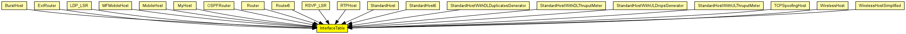
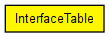

Keeps the table of network interfaces.
Interfaces are dynamically registered by the corresponding L2 modules, e.g. PPPInterface. In addition to registered interfaces, a loopback interface will also be created. This table only contains protocol-independent properties of interfaces -- IP or IPv6 specific per-interface data (addresses etc) are kept in RoutingTable and RoutingTable6.
This module has no gates; all functionality can be accessed via member functions of the C++ module class. For detailed info, please see the C++ documentation of the class (Doxygen).
Author:: Andras Varga
The following diagram shows usage relationships between types. Unresolved types are missing from the diagram. Click here to see the full picture.
The following diagram shows inheritance relationships for this type. Unresolved types are missing from the diagram. Click here to see the full picture.
If a module type shows up more than once, that means it has been defined in more than one NED file.
| BurstHost (compound module) |
Definition of an IP node with a transport generator that connects to IP directly, without TCP or UDP. |
| ExtRouter (compound module) |
External router. |
| LDP_LSR (compound module) |
An LDP-capable router. |
| MFMobileHost (compound module) |
Models a mobile host with a wireless (802.11b) card in ad-hoc mode. This model contains the Mobility Framework's 802.11 implementation, Nic80211, and IP, TCP and UDP protocols. The mobility model can be dynamically specified with the mobilityType parameter. |
| MobileHost (compound module) |
Models a mobile host with a wireless (802.11b) card in ad-hoc mode. This model contains the new IEEE 802.11 implementation, Ieee80211Nic, and IP, TCP and UDP protocols. The mobility model can be dynamically specified with the mobilityType parameter. |
| MyHost (compound module) | (no description) |
| OSPFRouter (compound module) |
An OSPFv2 router. |
| Router (compound module) |
IP router. |
| Router6 (compound module) |
IPv6 router. |
| RSVP_LSR (compound module) |
An RSVP-TE capable router. |
| RTPHost (compound module) | (no description) |
| StandardHost (compound module) | |
| StandardHost6 (compound module) | |
| StandardHostWithDLDuplicatesGenerator (compound module) |
IP host with TCP, UDP, SCTP layers and applications AND PPPInterfaceWithDLDuplicatesGenerator. |
| StandardHostWithDLThruputMeter (compound module) |
IP host with TCP, UDP, SCTP layers and applications AND PPPInterfaceWithDLThruputMeter. |
| StandardHostWithULDropsGenerator (compound module) |
IP host with TCP, UDP, SCTP layers and applications AND PPPInterfaceWithULDropsGenerator. |
| StandardHostWithULThruputMeter (compound module) |
IP host with TCP, UDP, SCTP layers and applications AND PPPInterfaceWithULThruputMeter. |
| TCPSpoofingHost (compound module) |
IP host with TCPSpoof in the application layer. |
| WirelessHost (compound module) |
Models a host with one wireless (802.11b) card in infrastructure mode. This module is basically a StandardHost with an Ieee80211NicSTA added. It should be used in conjunction with WirelessAP, or any other AP model which contains Ieee80211NicAP. |
| WirelessHostSimplified (compound module) |
Models a host with one wireless (802.11b) card in infrastructure mode, but using a simplified NIC that does not support handovers. This module is basically a StandardHost with an Ieee80211NicSTASimplified added. It should be used in conjunction with WirelessAPSimplified, or any other AP model which contains Ieee80211NicAPSimplified. |
| Name | Value | Description |
|---|---|---|
| display | i=block/table |
// // Keeps the table of network interfaces. // // Interfaces are dynamically registered by the corresponding L2 modules, e.g. // PPPInterface. In addition to registered interfaces, a loopback interface // will also be created. This table only contains protocol-independent // properties of interfaces -- IP or IPv6 specific per-interface data // (addresses etc) are kept in RoutingTable and RoutingTable6. // // This module has no gates; all functionality can be accessed via member // functions of the C++ module class. For detailed info, please see the C++ // documentation of the class (Doxygen). // // @author: Andras Varga // simple InterfaceTable { parameters: @display("i=block/table"); }